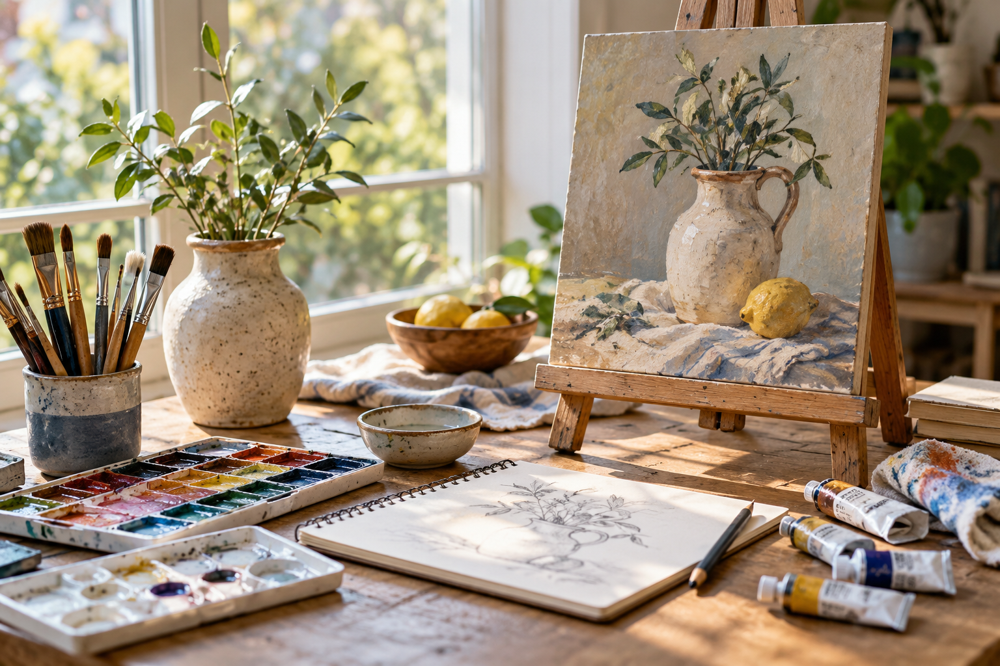

油絵
色を重ねる表現に
触れてみたい方へ。
広島市西区 己斐西町
油絵の色を、重ねる。
水彩のにじみを、楽しむ。
はじめの一歩も、久しぶりの一枚も。
爽風会の油絵・水彩レッスンを
曜日と料金からご案内します。

描くもの油絵・水彩
レッスン曜日月・水・土
時間13:00 — 15:00
PAINTING
色を選んで、筆を持つ。
描いてみたいものを、少しずつ。
爽風会では、油絵と水彩を学べます。
描きたいものや道具についても、
教室に相談するところから。
色を重ねる表現に
触れてみたい方へ。
水と色の表情を
楽しんでみたい方へ。
内容や用意する道具は、教室への確認が必要です。
LESSONS & FEES
本人の公開掲載に基づくご案内です。
参加方法・会場・日程の詳細は教室へご確認ください。
それぞれ材料費込み
各1回1,000円
1回あたり
2,000円
2,000円
通常レッスンの材料費や料金の詳細は、教室へご確認ください。
A LITTLE NOTE
月・水・土のいずれかを選ぶと、
体験についての相談例文が切り替わります。
操作見本です。
問い合わせ・予約・送信は行われません。
月曜日の体験レッスンについて、参加方法と会場、用意する道具を確認したいです。
この選択は空席確認や予約ではありません。
実際の会場・用意する道具は教室にご確認ください。
個人情報の入力・保存・送信はありません。
ABOUT
油絵・水彩の絵画教室